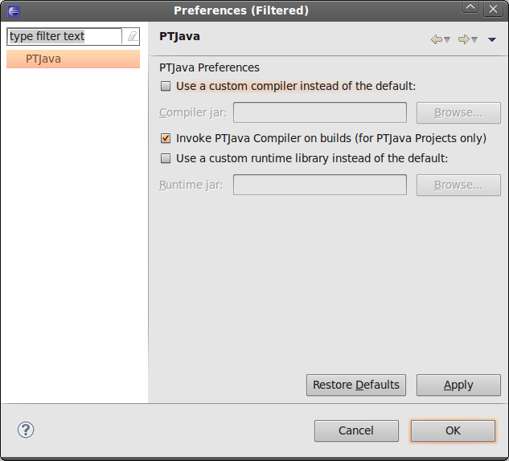
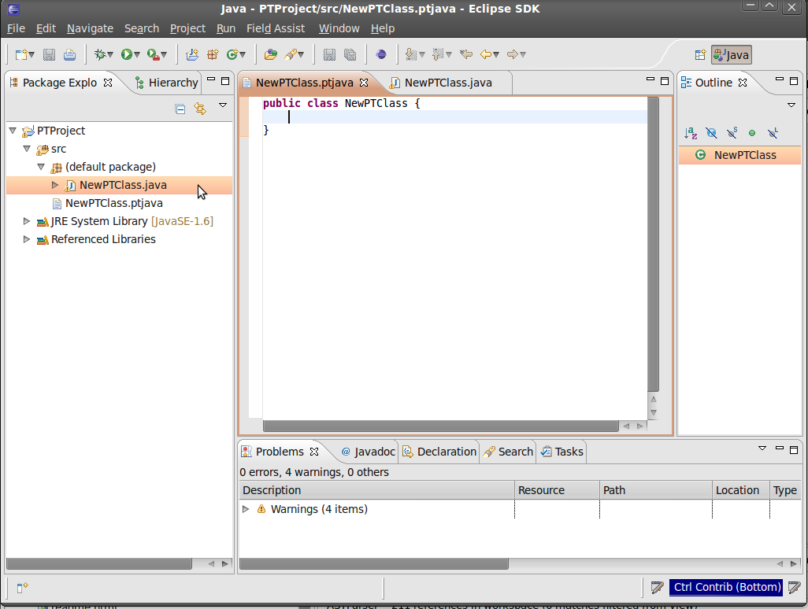

A PTJava Project is simply a Java Project with the PTJava nature associated with the project.
The PTJava nature allows the PTJava builder to compile .ptjava sources files into .java files.
To create a PTJava Project:
Notes:
When the plug-in starts up, it puts a copy of the default PTRuntime.jar into the workspace root directory of Eclipse. This is because the default PTRuntime.jar located inside the plug-in is not visible to projects in the workspace.
If a custom PTRuntime.jar file is used, the Java Build Path of all PTJava Projects in the workspace will be altered to use the custom PTRuntime.jar.
Likewise, if a custom compiler is specified, then all PTJava Projects will be compiled using the custom compiler.
To create a PTJava Class File (and associated Java file):
The example below will generate two files (shown below):
Manually editing the Java class is not recommended, as it is automatically overwritten on project builds.
The user can freely edit the PTJava class file. The PTJava text editor is derived from the Java text editor, and therefore has a very similar look and feel to it.
Notes:
When the plug-in starts up, it puts a copy of the default PTRuntime.jar into the workspace root directory of Eclipse. This is because the default PTRuntime.jar located inside the plug-in is not visible to projects in the workspace.
If a custom PTRuntime.jar file is used, the Java Build Path of all PTJava Projects in the workspace will be altered to use the custom PTRuntime.jar.
Likewise, if a custom compiler is specified, then all PTJava Projects will be compiled using the custom compiler.
Since the PTJava text editor is derived from the Java text editor (JDT), preferences such as syntax highlighting can be altered via the Java Text Editor Preferences page: Window >> Preferences >> Java.
A view has been created to summarize the TASK and INTERACTIVE_TASK declarations.
This can be shown using the following commands:
Notes:
The PTJava Task Viewer only shows declarations for PTJava files (with the extension ".ptjava").
The Task Viewer reads the declarations from the last saved instance of the file, and listens for selection change events to refresh the view. Therefore, modified declarations will not show in the view until the file is saved and the editing cursor is moved in the editor.
The PTJava Compiler is a source-to-source compiler, that generates Java files (.java) from PTJava files (.ptjava). The PTJava Editor plug-in deals with compilation errors depending on whether the error occured in a PTJava file or a generated Java file:
{kind=link}
{kind=link}
{kind=link}
{kind=link}
{kind=link}
{kind=link}
{kind=link}
{kind=link}